Project 3: Camera Calibration and Fundamental Matrix Estimation with RANSAC
1. Implementation
Project 3 can be divided into three parts. The first is calculating project matrix and camera center. In this part, I implemented two functions calculate_projection_matrix() and calculate_camera_center(). The first is to calculate projection matrix from points' 3d coordiates and their corresponding 2d coordinates. The second is to calculate camera center using the elements in projection matrix. The second part is to calculate the fundamental matrix using two pairs of points in two corresponding images in function estimate_fundamental_matrix(). I used svd to solve the system of homogeneous linear equations. In the last part, I implemented ransac_fundamental_matrix() by using ransac algorithm to estimate the fundamental matrix. I did various experiments on different threshold, and output the best fundamental matrix and the inliers for input image a and b.
Projection matrix and camera center calculation
In this part, I used the input points' 2d coordinates and their corresponding 3d coordinates to calculate the projection matrix and camera center. With 20 ground-truth of corresponding points in two images which are shot from different angles, we are able to estimate the camera's position and angle using least squares regression. M is the projection matrix sized of 3 * 4. Since we only calculate 11 elements in the equation, I set M34 as 1 as the last element of projection matrix. The code for calculating projection matrix is as below. The total residual is 0.044535.
%% calculating projection matrix
points_num = points_2d.shape[0]
a = []
b = []
for n in range(points_num):
x = points_3d[n,0]
y = points_3d[n,1]
z = points_3d[n,2]
u = points_2d[n,0]
v = points_2d[n,1]
a.append([x,y,z,1,0,0,0,0, -u*x, -u*y, -u*z])
b.append([u])
a.append([0,0,0,0,x,y,z,1, -v*x, -v*y, -v*z])
b.append([v])
A = np.mat(a)
B = np.mat(b)
M = np.dot(np.linalg.inv(np.dot(A.T, A)), np.dot(A.T, B))
M = np.array(M.T)
M = np.append(M,[1])
M = np.reshape(M,(3,4))
|
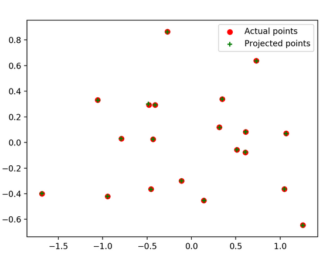
Projection matrix |
Then I used C = -Q^(-1)m4 to calculate camera center. The code is as below. The estimated location of the camera center is <-1.5126, -2.3517, 0.2827>, which is the same as provided.
%% calculating projection matrix
cc = np.dot(np.linalg.inv(np.dot(-M[:,0:3].T, -M[:,0:3])), np.dot(-M[:,0:3].T, M[:,3]))
|
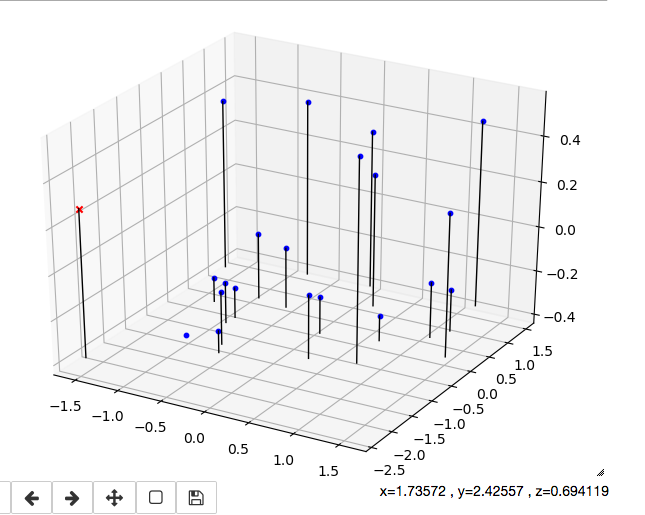
Evaluation of matching points |
Estimation of Fundamental Matrix
I used similar method in calculating projection matrix to estimate the fundamental matrix. Specifically, I used SVD in python to solve the 8-points problem. The code is as below.
%% Fundamental matrix estimation
points_num = points_a.shape[0]
A = []
B = np.ones((points_num,1))
for i in range(points_num):
u_a = points_a[i,0]
v_a = points_a[i,1]
u_b = points_b[i,0]
v_b = points_b[i,1]
A.append([u_a*u_b, v_a*u_b, u_b, u_a*v_b, v_a*v_b, v_b, u_a, v_a])
A = np.array(A)
F = np.dot(np.linalg.inv(np.dot(A.T, A)), np.dot(A.T, -B))
F = np.append(F,[1])
F = np.reshape(F,(3,3)).T
F = np.dot(T_a.T, F)
F = np.dot(F, T_b)
F = F.T
U,S,V = np.linalg.svd(F)
S = np.array([[S[0],0,0],[0,S[1],0],[0,0,0]])
F = np.dot(U, S)
F = np.dot(F, V)
The epipolar lines in image a and b are as below.
|
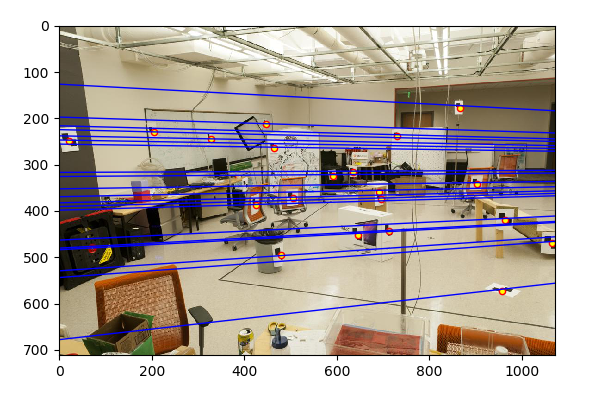
Epipolar lines in image a |
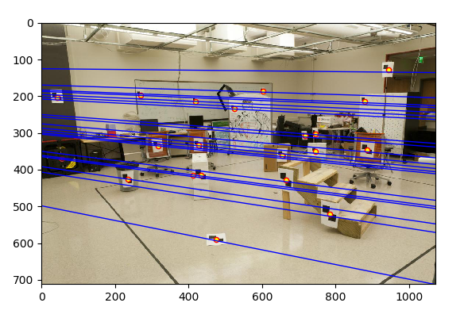
Epipolar lines in image b |
Fundamental Matrix with RANSAC
In this part, unreliable point correspondences computed with ORB descriptors are used to estimate the fundamental matrix. RANSAC algorithm is extremely suitable when there are outliers. I randomly pick up corresponding pairs and calculate the parameters, then I applied the parameters and select the inliers within a specific threshold, I iterated 500 times to find the best model. In order to clearly see the results, I only randomly output 50 epipolar lines in the results. I output the size of inliers so that I can calculate the accuracy. The code is as below.
%% Fundamental matrix with RANSAC
matches_num = matches_a.shape[0]
Best_count = 0
for iter in range(500):
sampled_idx = np.random.randint(0, matches_num, size = 8)
F = estimate_fundamental_matrix(matches_a[sampled_idx, :], matches_b[sampled_idx, :])
in_a = []
in_b = []
update = 0
for i in range(matches_num):
matches_aa = np.append(matches_a[i,:],1)
matches_bb = np.append(matches_b[i,:],1)
error = np.dot(matches_aa, F.T)
error = np.dot(error, matches_bb.T)
if abs(error) < 0.04:
in_a.append(matches_a[i,:])
in_b.append(matches_b[i,:])
update +=1
if update > Best_count:
Best_count = update
best_F = F
inliers_a = in_a
inliers_b = in_b
inliers_a = np.array(inliers_a)
inliers_b = np.array(inliers_b)
idx = np.random.randint(0, inliers_a.shape[0], size = 50)
inliers_a = inliers_a[idx, :]
inliers_b = inliers_b[idx, :]
2. Experiments on different images
The results of expeiments on dataset Mount Rushmore are as below. I set threshold as 0.04, and obtain 681 inliers. The total number of matching points input is 1177. So the accuracy is 57.86%.
|
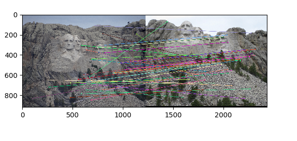
Matching lines |
|
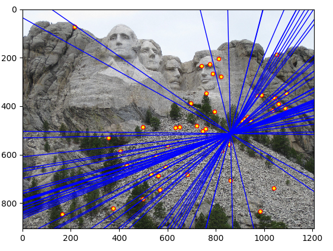
Inliers in image a |
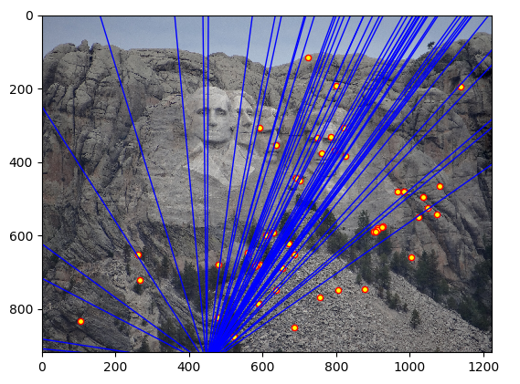
Inliers in image b |
The results of expeiments on dataset Notre Dame are as below. I set threshold as 0.03, and obtain 686 inliers. The total number of matching points input is 1282. So the accuracy is 53.51%.
|
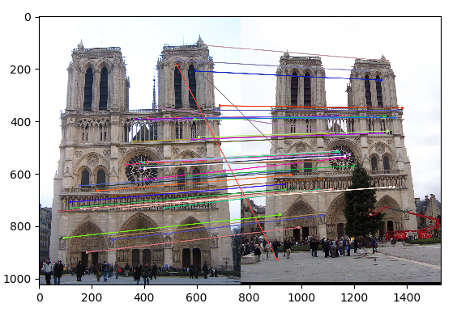
Matching lines |
|
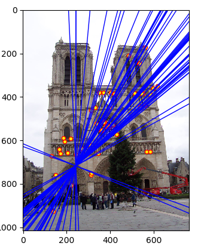
Inliers in image a |
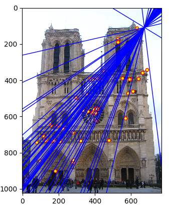
Inliers in image b |
The results of expeiments on dataset Gaudi are as below. I set threshold as 0.002, and iterate 5000 times. Then I obtained inliers. The total number of matching points input is 1037. So the accuracy is 9.55%. We can find that the result is not so good while the input images have different scales.
|
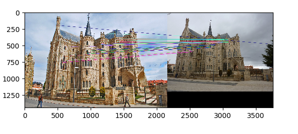
Matching lines |
|
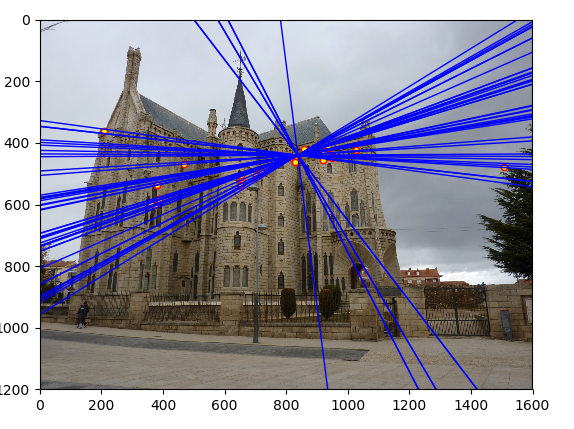
Inliers in image a |
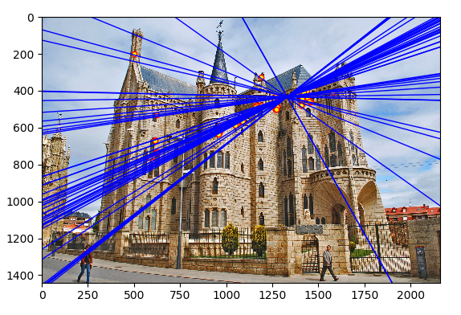
Inliers in image b |
The results of expeiments on dataset Woodruff are as below. I set threshold as 0.04, and obtain 619 inliers. The total number of matching points input is 1137. So the accuracy is 54.44%.
|
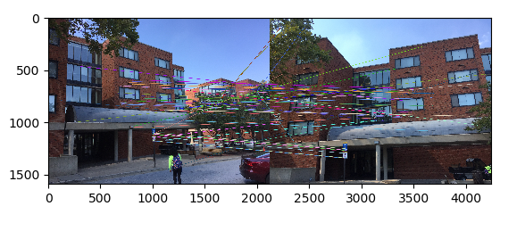
Matching lines |
|
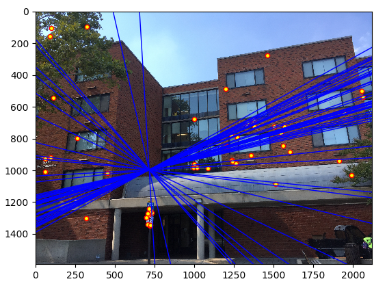
Inliers in image a |
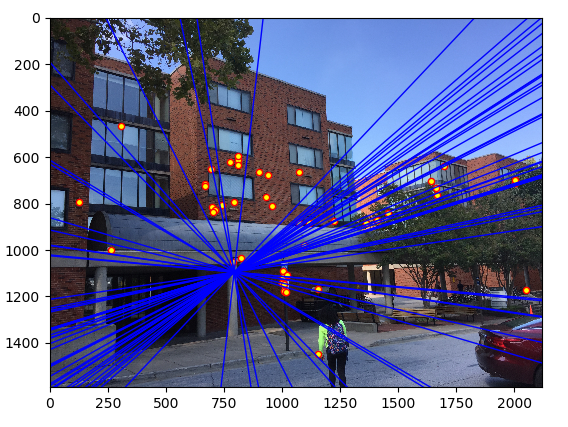
Inliers in image b |
We can see that in the experiments above, some epipolar lines do not go through the points, which shows that the results are not reliable. So I did some improvements in the next step.
3. Improvements of normalization
We can see that in experiments on dataset Gaudi, the accuracy is pretty low. So I improved the performance in estimation of fundamental matrix through normalizing the points a and b. After computing the mean coordinates, the scale is computed by letting the average squared distance from the origin to be 2.
cu_a = np.sum(points_a[:,0])/points_num
cv_a = np.sum(points_a[:,1])/points_num
s = points_num/np.sum(((points_a[:,0]-cu_a)**2 + (points_a[:,1]-cv_a)**2)**(1/2))
T_a =np.dot(np.array([[s,0,0], [0,s,0], [0,0,1]]), np.array([[1,0,-cu_a],[0,1,-cv_a],[0,0,1]]))
points_a = np.array(points_a.T)
points_a = np.append(points_a,B)
points_a = np.reshape(points_a, (3,points_num))
points_a = np.dot(T_a, points_a)
points_a = points_a.T
cu_b = np.sum(points_b[:,0])/points_num
cv_b = np.sum(points_b[:,1])/points_num
s = points_num/np.sum(((points_b[:,0]-cu_b)**2 + (points_b[:,1]-cv_b)**2)**(1/2))
T_b =np.dot(np.array([[s,0,0], [0,s,0], [0,0,1]]), np.array([[1,0,-cu_b],[0,1,-cv_b],[0,0,1]]))
points_b = np.array(points_b.T)
points_b = np.append(points_b,B)
points_b = np.reshape(points_b, (3,points_num))
points_b = np.dot(T_b, points_b)
points_b = points_b.T
The epipolar lines in image a and b are as below.
|
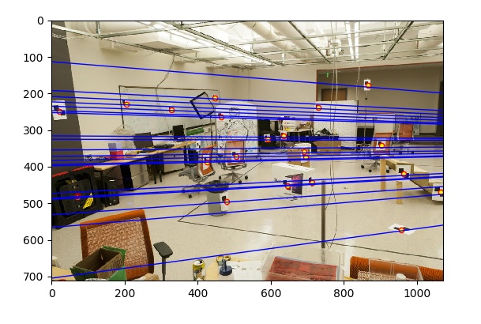
Epipolar lines in image a |
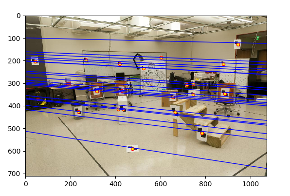
Epipolar lines in image b |
The results of expeiments on dataset Mount Rushmore are as below. I output randomly 50 epipolar lines. I set threshold as 0.06, and obtain 785 inliers. The total number of matching points input is 1177. So the accuracy is 66.70%.
|
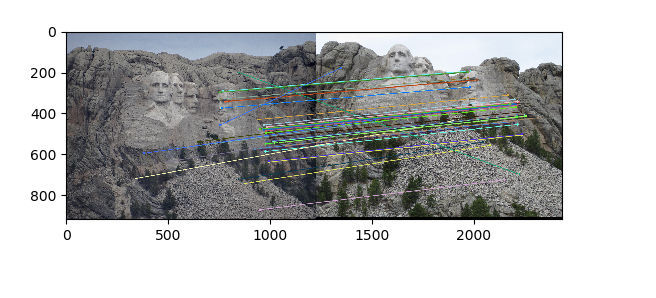
Matching lines |
|
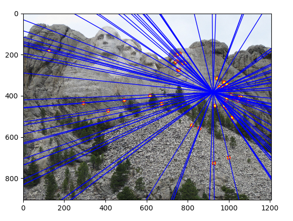
Inliers in image a |
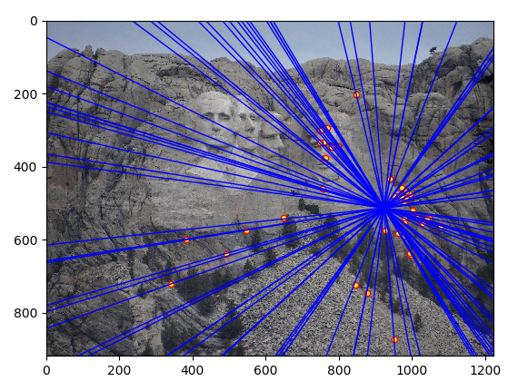
Inliers in image b |
The results of expeiments on dataset Notre Dame are as below. I set threshold as 0.06, and obtain 742 inliers. The total number of matching points input is 1282. So the accuracy is 57.88%.
|
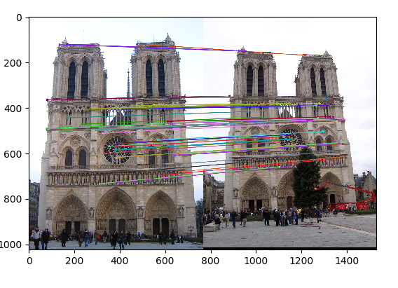
Matching lines |
|
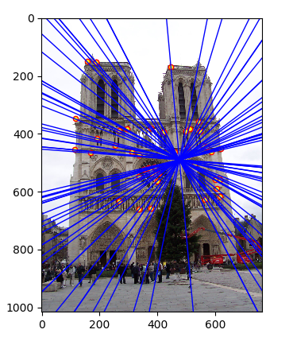
Inliers in image a |
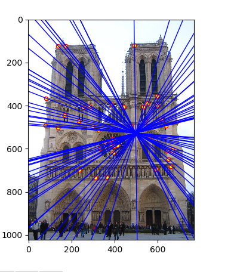
Inliers in image b |
The results of expeiments on dataset Gaudi are as below. I set threshold as 0.055, and obtain 210 inliers. The total number of matching points input is 1037. So the accuracy is 20.25%. We can see that it improves the accuracy from 9.55% to 20.25%. And we can see from the results thta the epipolars nearly go through all the points, which shows that the results are more reliable.
|
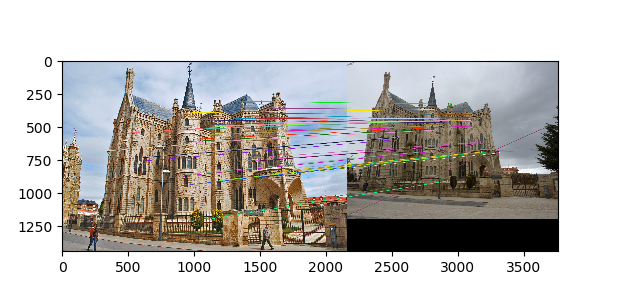
Matching lines |
|
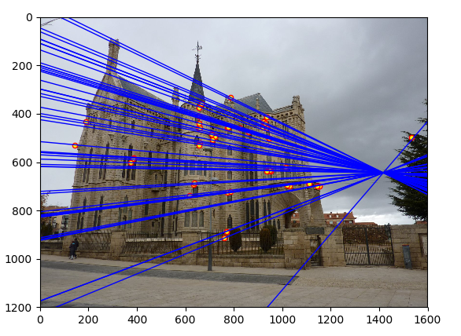
Inliers in image a |
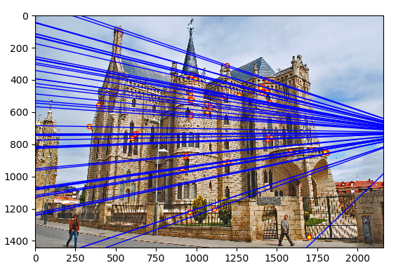
Inliers in image b |
The results of expeiments on dataset Woodruff are as below. I set threshold as 0.06, and iterate 5000 times. Then I obtained 731 inliers. The total number of matching points input is 1137. So the accuracy is 64.30%.
|
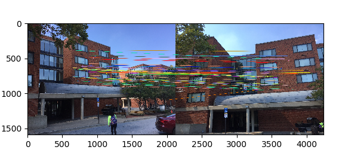
Matching lines |

Inliers in image a |
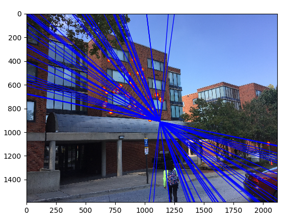
Inliers in image b |
We can see from the results above that while normalizing points set a and b in estimating fundamental matrix, the epipolar lines nearly all go through the points, which shows that the results are more reliable.
4. Extra credits
In projection matrix and camera center calculation, I used normalized points datasets. I also tested non-normalized data pts2d-pic_b.txt and pts3d.txt. The results are as below. We can see that the total residual is 15.621768, which is also small since the points that are not normalized are very large. The estimated camera center is <303.0967, 307.1842, 30.4223>. Thus, my program of calculting projection matrix and camera center has good performance.
|
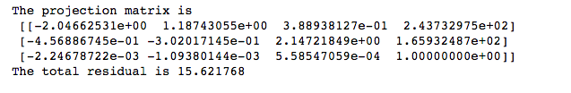
Projection matrix of non-normalized data |
|
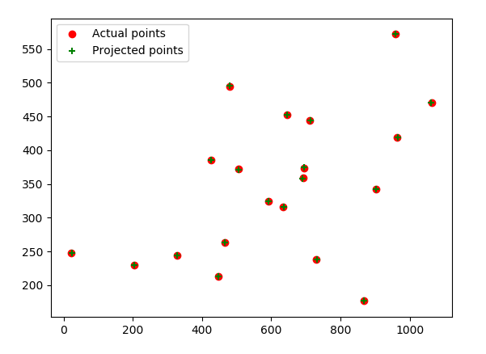
Projection matrix of non-normalized data |
|
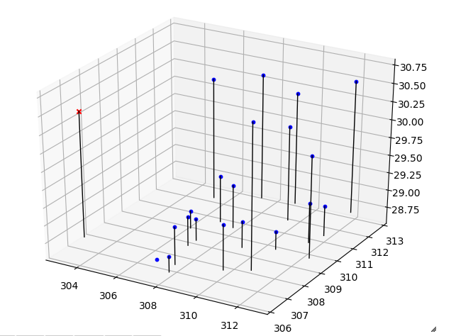
Estimated camera center of non-normalized data |